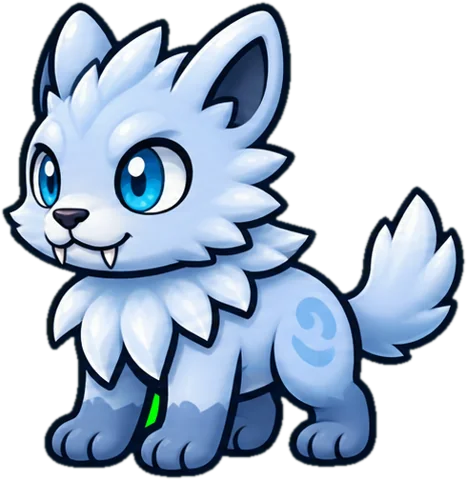

Tap a stage to read its story.
Chillpup looks harmless enough - a soft blue-white pup with wide round eyes and a fluffy tail - but the Crystal Mines have left their mark on it. Its fur carries a faint metallic sheen, and it is far quicker to growl than to wag. It has learned to use the darkness between crystal formations to hide with uncanny skill, its pale coat blending with the frost-rimed walls in a way that makes miners nervous. Small enough to sit in a lap but sharp enough to bite a boot clean through, Chillpup is not a creature to underestimate.
Field note: Chillpup can vanish between two crystal columns in less than a heartbeat - miners call this vanishing trick the "cold blink."
Crystal Mines. Chillpup and its family are found in the Crystal Mines. See everyone who lives there.
Share a Bond Food that matches its types to become friends. Chillpup loves:
A Bond Food is not a trick. It joins your spirit with the Kimuro's spirit, and only when it chooses you.
Print the Kimuro adventure packs: mazes, cards, a board game and Bond Mark medals.
See the printable packs